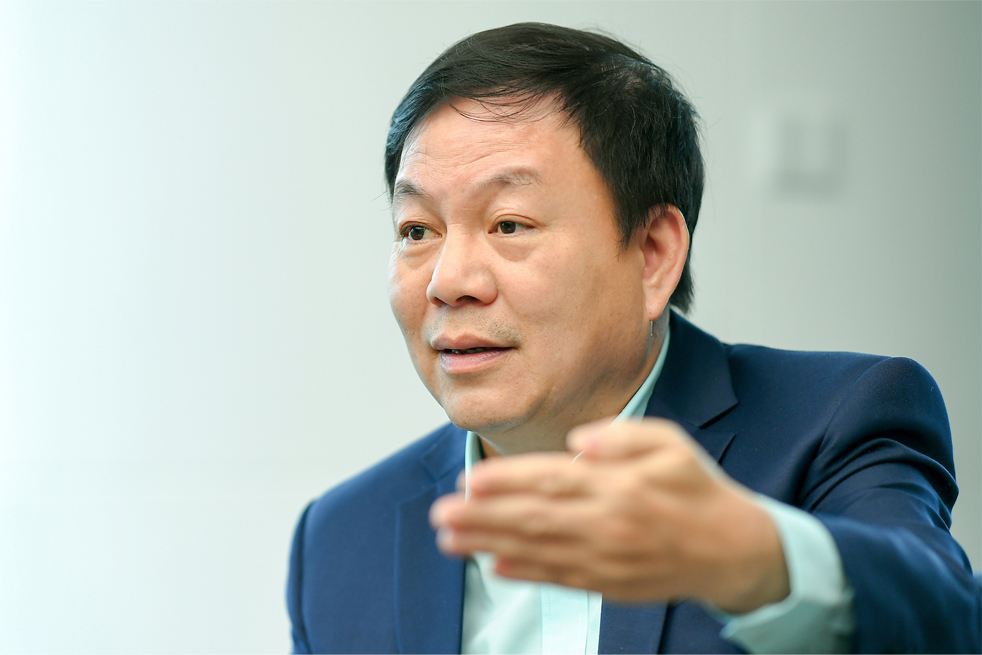

Nhìn lại kết quả kinh doanh năm 2019, ông thấy Viettel có những kết quả gì nổi bật?
Năm 2019, doanh thu của Viettel tăng trưởng 7,5% trong tình hình viễn thông đã bão hòa là kết quả tốt. Một điểm sáng trong hoạt động kinh doanh của Viettel năm 2019 là đầu tư nước ngoài. Trong bối cảnh khó khăn, doanh thu từ đầu tư nước ngoài của Viettel tăng trưởng tới gần 25% - gấp nhiều lần so với mặt bằng chung của ngành viễn thông thế giới, và lợi nhuận đạt tới 2.200 tỷ đồng – gấp 2 lần so với kế hoạch.
Ông có thể chia sẻ cụ thể hơn về những thay đổi ở các thị trường nước ngoài của Viettel?
Mặc dù ở một số thị trường khu vực châu Phi, chúng tôi vẫn còn gặp những khó khăn do điều kiện kinh tế- xã hội, bất ổn chính trị, chịu tác động của tỷ giá tiền tệ…, nhưng cũng đang tìm thấy những hướng đi mới ở những thị trường thuộc châu Á và châu Mỹ.
Viettel đang có một dự án rất thành công tại Myanmar (Mytel) với mức tăng trưởng đạt kỷ lục về thuê bao di động từ trước đến nay khi đầu tư ra nước ngoài. Hiệu quả từ thị trường này cũng là nhân tố quan trọng giúp Viettel có lợi nhuận tăng mạnh từ đầu tư quốc tế năm 2019.
Bên cạnh đó, 2 thị trường truyền thống là Lào, Campuchia cũng phục hồi và tăng trưởng rất mạnh. Haiti sau một thời gian chững lại cũng tìm được hướng phát triển tốt, Peru có thay đổi mạnh mẽ…
Tất cả những điều đó tạo ra một sự thay đổi lớn của Viettel trong hoạt động kinh doanh ở nước ngoài.

Điều gì đã thay đổi tại Viettel dẫn tới bước ngoặt về kết quả kinh doanh trong hoạt động đầu tư nước ngoài?
Quá trình này bắt nguồn từ năm 2018 khi Viettel quyết định tập trung toàn bộ vào hiệu quả lợi nhuận và dòng tiền đem về Việt Nam với hoạt động đầu tư nước ngoài. Đây là yếu tố rất quan trọng dẫn tới các thay đổi sau đó.
Vì thế, chúng tôi thay đổi về cách làm. Thay vì “lấy nông thôn vây thành thị”, chúng tôi tập trung vào thành thị. Bởi vì, sau một thời gian, chúng tôi nhận ra, ở nông thôn châu Phi, người dân nghèo quá, ăn còn không đủ nói gì đến dùng viễn thông. Mặc dù thành thị là nơi phải cạnh tranh rất mạnh vì nhiều đối thủ nhưng phải làm vì chỗ đấy mới có nhu cầu dùng viễn thông cao. Khi chúng tôi làm tốt ở thành thị thì hiệu quả tăng lên.
Một việc nữa là chiến lược nhân sự. Giám đốc của các thị trường hiện nay là những cán bộ ưu tú của Viettel và hầu hết là “nguồn” cho vị trí Phó Tổng giám đốc Tập đoàn sau này.
Ở nước ngoài thì tinh thần tự chiến đấu của giám đốc và nhân sự chủ chốt là quan trọng nhất. Họ phải đủ tầm để quyết định chính sách kinh doanh phù hợp với yêu cầu của khách hàng. Đó chính là những lý do quan trọng năm 2019 Viettel thu hái được kết quả tốt trong lĩnh vực đầu tư nước ngoài.
Trong năm 2019, chiến lược quan trọng và xuyên suốt nhất của Tập đoàn Viettel là chuyển dịch số. Nếu kể ra 5 điểm nhấn quan trọng nhất về chuyển dịch số của Viettel thì đó là gì?
Thứ nhất là chuyển đổi số hệ thống quản trị nội bộ (ERP). Thực tế, Viettel là doanh nghiệp công nghệ nhưng quản trị nội bộ theo đúng nghĩa của một doanh nghiệp số vẫn chưa được như kỳ vọng.
Chúng tôi đã số hóa nghiệp vụ ở tất cả bộ phận rồi, nhưng tất cả đều liên thông với nhau theo dòng chảy của kỹ thuật số thì chưa đạt chuẩn thế giới. Trong năm 2019, Viettel đã cùng với SAP đẩy mạnh việc triển khai ERP thống nhất trên toàn Tập đoàn, theo các chuẩn của thế giới.
Chúng tôi cũng thống nhất tất cả các quyết định kinh doanh phải dựa trên phân tích dữ liệu lớn (big data), hướng tới khách hàng, chứ không dựa trên cảm nhận chủ quan. Bên cạnh đó, công tác chăm sóc khách hàng, bán hàng, kinh doanh… đều được tự động hóa tối đa, với sự hỗ trợ của trí tuệ nhân tạo (AI) và chuyển sang online, giảm tiếp xúc trực tiếp với khách hàng.

Thứ hai, chúng tôi rất chú trọng việc giới thiệu dịch vụ số đến khách hàng, trong đó có hai lĩnh vực quan trọng nhất là thanh toán số và nội dung số. Với thanh toán số, ViettelPay làm theo kiểu ngân hàng số cũng khá thành công nhưng chúng tôi đang chờ đợi giấy phép mobile money để có sự phát triển đột phá hơn ở lĩnh vực này. Ở mảng nội dung số, Viettel đã định hướng trở thành nhà sản xuất nội dung số chuyên nghiệp và sắp tới sẽ hệ thống hóa lại thành một hệ sinh thái thống nhất.
Thứ ba, ngoài chuyển đổi số cho mình, Viettel còn tư vấn và thực hiện chuyển đổi số cho các doanh nghiệp và tổ chức của Việt Nam nữa. Viettel đã xây dựng Tổng công ty Giải pháp doanh nghiệp Viettel (VTS) trở thành nhà tư vấn, cung cấp giải pháp chuyển đổi số cho các doanh nghiệp lớn, nhỏ và tổ chức, đặc biệt là xây dựng chính phủ điện tử cho trung ương và địa phương.
Trong năm 2019, một trong những việc rất quan trọng mà VTS đã làm được là xây dựng chính phủ điện tử thành công không cần đầu tư hàng trăm hay hàng nghìn tỷ đồng mới làm được, mà có thể bắt đầu với số tiền không lớn. Dự án chính phủ điện tử tại Thừa Thiên Huế là ví dụ điển hình.
Thứ tư, Viettel đã số hóa thành công nhiều công ty với các nghiệp vụ truyền thống, sử dụng phần lớn là lao động thủ công như bưu chính, công trình, xuất nhập khẩu… Những công ty này gần như chuyển đổi về chất trong năm 2019 và sẽ còn tiếp tục thay đổi nữa để trở thành doanh nghiệp công nghệ.
Ví dụ như Viettel Post, từ một công ty truyền thống nhất, yếu tố công nghệ gần như bằng 0 thì giờ áp dụng công nghệ thông tin mạnh bậc nhất ở Viettel. Công ty Công trình Viettel cũng bắt đầu trở thành một nhà đầu tư nhà trạm, trở thành “tower core”, kiểu như không còn làm thuê nữa mà giờ làm ông chủ…
Thứ năm là số hóa trong lĩnh vực nghiên cứu sản xuất. Năm 2019, Viettel có được nhiều kết quả trong lĩnh vực nghiên cứu sản xuất thiết bị quân sự, quốc phòng. Ở lĩnh vực dân sự, nổi bật lên là những thành tựu trong nghiên cứu sản xuất thiết bị 5G dù đó mới chỉ là kết quả ban đầu và còn phải tiếp tục đầu tư và quyết tâm thực hiện lớn hơn.
Về chuyển đổi số, thường doanh nghiệp nhỏ thì sẽ đi nhanh hơn, doanh nghiệp lớn như Viettel làm thế nào để thực hiện được tuyên bố 2 năm phải thành công?
Viettel lớn nhưng về bản chất là công ty công nghệ rồi, các yếu tố nền tảng đã có sẵn. Vấn đề chỉ là chưa hình thành hệ sinh thái liên kết với nhau đúng chuẩn của công ty lớn. Nên bây giờ nhiệm vụ chỉ là hệ thống lại, thúc đẩy chuyển đổi thật nhanh thôi.
Tuyên bố thực hiện chiến lược chuyển đổi số toàn diện và làm trên mọi mặt trận, nhưng liệu điều này có dẫn tới việc nhiều nơi ở Viettel rơi vào tình trạng làm theo phong trào và không hiệu quả?
Nếu Viettel làm để “biểu diễn” thì mới xảy ra việc phong trào và không hiệu quả. Chúng tôi thực hiện chuyển đổi số để trở nên tinh gọn hơn và hiệu quả hơn; sau đó còn đem các kinh nghiệm đó triển khai giúp các doanh nghiệp, tổ chức khác nên không thể xảy ra chuyện đó được. Thực hiện chuyển đổi số chắc chắn phải đi kèm với các chỉ số hiệu quả tốt lên và trong từng giai đoạn nhỏ, Viettel đều đánh giá cụ thể rồi mới thực hiện tiếp.
Trong một phần trả lời phỏng vấn tờ báo nội bộ của Viettel về câu chuyện chuyển đổi số, ông có nói một ý: “Câu chuyện bây giờ chỉ là chúng ta có dám chấp nhận chuyển đổi hay không thôi”. Ông có nhắn nhủ gì với các nhân viên của mình qua đó?
Chuyển đổi số nói chung vướng nhất là hai việc. Thứ nhất là trình độ công nghệ thông tin. Các cơ quan khác chuyển đổi khó vì lãnh đạo cũng không thạo công nghệ thông tin lắm. Khi kiến thức chưa đủ thì người ta hay ngại. Thứ hai là về con người bởi khi tối ưu hiệu quả bằng số hóa thì sẽ có người thừa ra.
Đối với Viettel việc đầu không vướng nhưng vấn đề thứ hai thì cũng có. Nhưng chuyển đổi số là việc bắt buộc phải làm nên chúng tôi cần có chiến lược để giải quyết cho người lao động khi tối ưu hóa. Năm nay, chúng tôi sẽ có công bố rõ ràng hơn về chiến lược này.
Ở đây, ngoài việc đào tạo lại, bố trí công việc phù hợp trong Tập đoàn khi chuyển đổi số thì người lao động cũng phải tự trang bị cho mình thêm kiến thức, kỹ năng về công nghệ thông tin. Họ cũng phải phấn đấu, vượt lên để tiếp tục phát triển cùng Viettel chứ không thể đứng nguyên tại chỗ.
Khi Tập đoàn Viettel đạt đến quy mô trên 10 tỷ USD về doanh thu, tốc độ tăng trưởng vài năm gần đây đã chậm lại, đặc biệt là lĩnh vực viễn thông. Trong giai đoạn phát triển thứ 4, những thay đổi gì sẽ giúp Viettel tăng trưởng nhanh hơn và có thể nhìn thấy rõ nhất?
Sự chững lại của dịch vụ viễn thông truyền thống là không thể tránh khỏi, cả thế giới đều không tăng trưởng cao nữa. Các doanh nghiệp tăng trưởng mạnh nhất là các công ty công nghệ số như Alibaba, Amazon, Facebook…
Vấn đề của Viettel bây giờ là làm sao tạo được một mô hình vừa là công ty viễn thông truyền thống vừa là công nghệ. Nguồn giúp Viettel tăng trưởng nhanh hơn sẽ đến từ các dịch vụ số.
Nhưng dịch vụ số thì mỗi quốc gia chỉ có 1-2 công ty có thể sống tốt thôi, vì đây là trò chơi “Winner-take-all” (Người chiến thắng sẽ có tất cả). Giờ phải xây dựng làm sao để Viettel ít nhất là số 1 trong lĩnh nội dung số và thanh toán số. Điều này sẽ không dễ.
Thế nhưng, tôi nghĩ là Viettel có lợi thế là vừa có hạ tầng viễn thông, vừa có hàng chục triệu khách hàng đang sử dụng dịch vụ viễn thông. Tất cả dịch vụ số đều phải dựa trên viễn thông cả, và các công ty cung cấp dịch vụ số cũng phải sử dụng khách hàng của viễn thông. Vậy mà họ làm được, mình không làm được thì rất đau khổ.
Trong năm 2020, những mảng nào có triển vọng tăng trưởng nhất của Viettel và mảng nào sẽ gặp khó nhất?
Mảng khó nhất vẫn là viễn thông truyền thống. Năm nay, chúng tôi đặt mục tiêu có thêm 10 triệu thuê bao 4G nhưng sẽ cố gắng chuyển tất cả thuê bao 3G lên 4G. Nếu làm được như vậy thì có thể ngừng mạng 3G và tiết kiệm được rất nhiều chi phí.
Năm 2020, chúng tôi tiếp tục xây dựng hạ tầng viễn thông và CNTT hiện đại nhất. Viettel sẽ triệt để ảo hoá, cloud hoá, đa ứng dụng hoá mạng lưới của mình, sẵn sàng triển khai công nghệ siêu băng rộng 5G. Phải tạo ra một hạ tầng kết nối IoT rộng khắp để kết nối hàng tỉ thiết bị, quản lý và điều khiển chúng tự động với tốc độ siêu nhanh, không độ trễ. Đồng thời Viettel cũng tạo ra những nền tảng kỹ thuật số để khách hàng có thể thoả sức sáng tạo trên đó.
Viettel tiếp tục tiên phong phát triển và cung cấp các ứng dụng, dịch vụ số, những dịch vụ quyết định Việt Nam có trở thành quốc gia số hay không. Các dịch vụ này ứng dụng mạnh mẽ các công nghệ AI, Bigdata để hình thành hệ sinh thái số bao gồm: mobile money, nội dung số, thương mại điện tử, công cụ tìm kiếm, mạng xã hội, cơ sở dữ liệu… Viettel cũng chú trọng việc đẩy mạnh đảm bảo an ninh mạng để các dịch vụ số an toàn và tin cậy. Viettel phải chủ động tham gia vào xây dựng, hoàn thiện Chính phủ điện tử, đặc biệt ưu tiên tập trung xây dựng các cở sở dữ liệu dân cư, dữ liệu tài nguyên quốc gia. Viettel sẽ đồng hành cùng các Bộ, ngành, địa phương, các tổ chức, doanh nghiệp trong công cuộc chuyển đổi số.
Viettel rất kỳ vọng vào mảng thanh toán số, nhưng điều này còn phụ thuộc vào giấy phép mobile money. Nếu giấy phép được cấp sớm khách hàng sớm được hưởng lợi, sớm thúc đẩy xã hội số ở Việt Nam, tạo ra sự bùng nổ thương mại điện tử và tài chính điện tử, đây cũng sẽ là mảng bùng nổ của Viettel.